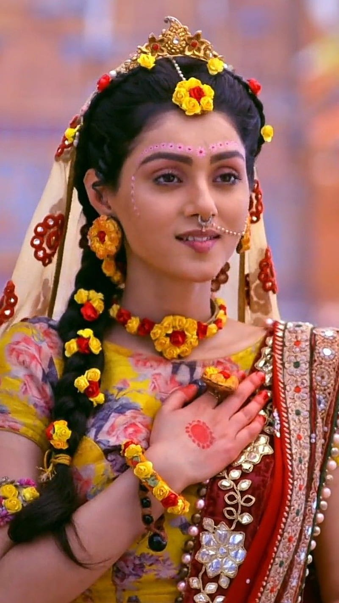
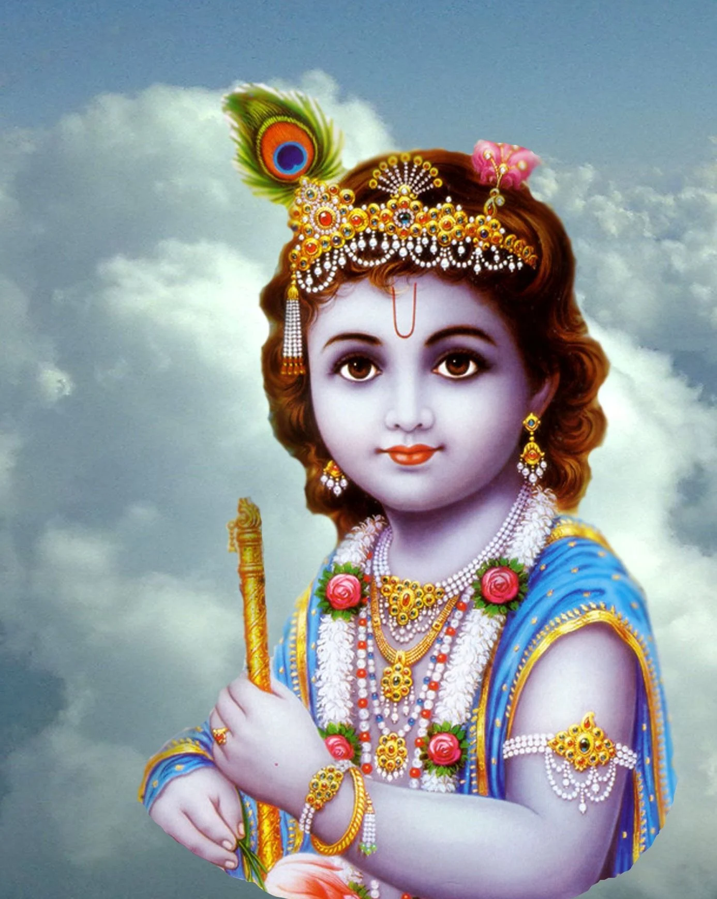
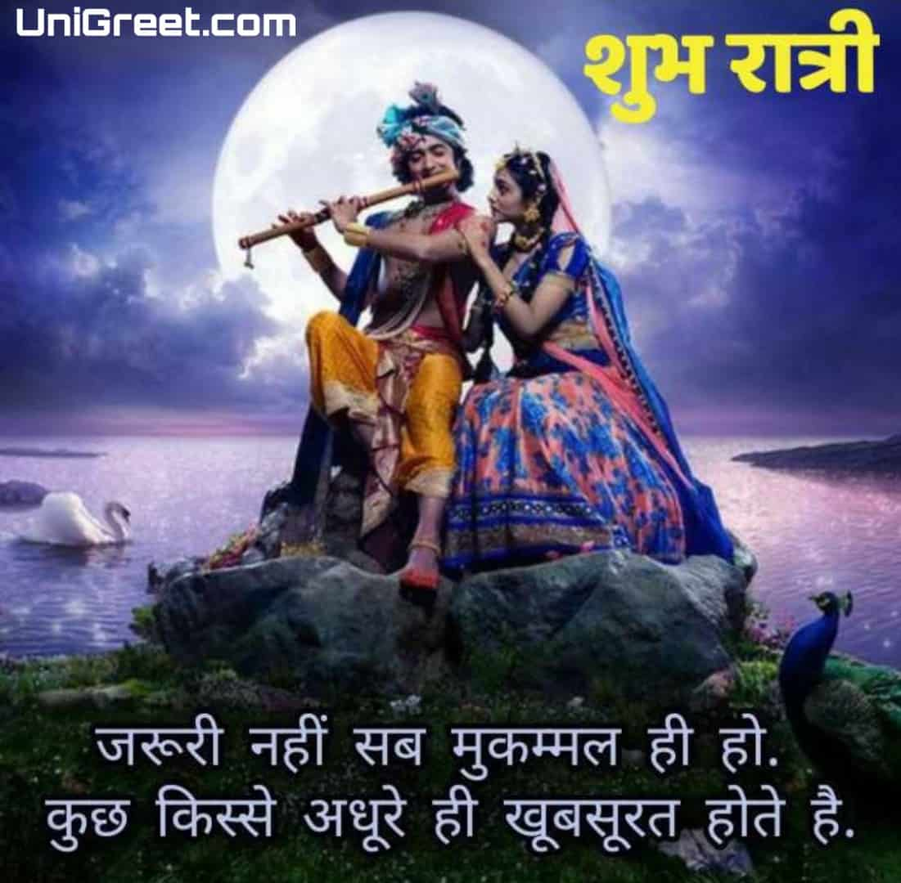
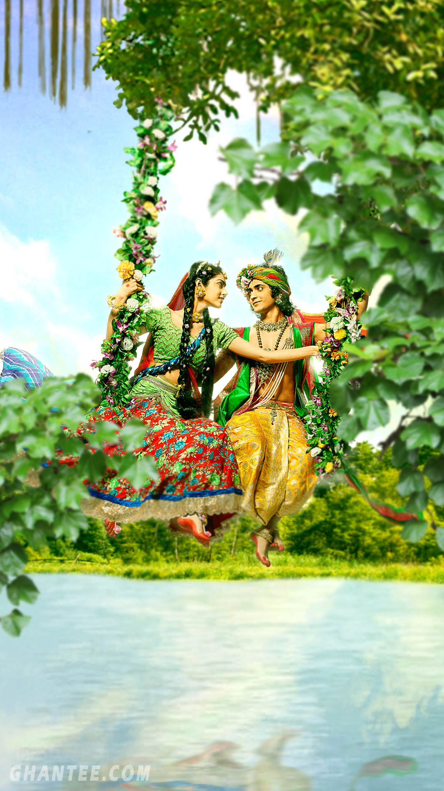

RADHAKRISHNA

RADHA
Radha (Sanskrit: राधा, IAST: Rādhā), also called Radhika, is a Hindu goddess and the chief consort of
the god Krishna. She is worshipped as the goddess of love, tenderness, compassion, and devotion. She is
the avatar of goddess Lakshmi and is also described as the chief of the Gopis
DIFFERENT NAMES OF RADHA
Radha's other names include [28] - Madan mohini, Srimati, Apurva, Pavitra, Ananda, Subhangi, Subha, Vaishnavi, Rasika, Hare,
Radharani, Ishvari, Venu-vadya, Mahalakshmi, Vrinda, Kalindi, Hrdaya, Gopa-kanya, Gopika, Yashodanandan-vallabha,
Krishnangvasini, Abhistada, Devi, Vishnu-priya, Vishnu-kanta, Jaya, Jiva, Veda-priya, Veda-garbha, Subhankari,
Deva-mata, Bharati, Kamalā, Annuttara, Dhriti, Jagannatha-priya, Laadli, Amoha, Srida, Sri-hara, Sri-garbha, Vilasini, Janani, Kamala-padma,Gati-prada,
Mati, Vrindavan-viharini, Brajeshvari, Nikunjeshvari, Niraloka, Yogeśī, Govinda-rāja-gṛhinī, Vimala, Ekanga, Achyuta-priya, Vrishbhanu-suta, Nandnandan-patni, Gopīnātheśvarī, and Sarvanga

KRISHNA
Krishna (/ˈkrɪʃnə/;[12] IAST: Kṛṣṇa [ˈkr̩ʂɳɐ]) is a major deity in Hinduism. The name comes from a Sanskrit
word (कृष्ण, kṛṣṇa) that means "black", "dark", "dark blue" or "the all attractive".[13] He is worshipped
as the eighth avatar of Vishnu and also as the Supreme God in his own right.[14] He is the god of protection,
compassion, tenderness, and love;

Achyutham Kesavam Rama-Narayanam Krishna-Damodaram Vasudevam Harim;
Sreedharam Madhavam Gopikavallabham Janakee-Nayakam Ramachandram Bhaja
radha krishna quotes:
No one that does good work will ever come to a terrible ending, either in the world to come.
Love does not discriminate between friend and foe, nor differentiate between caste and creed.
It is a love that is beyond the physical, and it is a love that is spiritual. It is a love that is eternal
The love story of Radha Krishna started at a very young age. According to legend, when Krishna was young,
he started playing the flute for grazing cows. Whenever Krishna played the flute, everyone and everything
was taken to a samadhi which was completely pure and beautiful. Even the gopis, or cowgirls, would stop
what they were doing, sense Krishna and start dancing around him in his love. However, a gopi, Radha, had
taken him captive. The whole universe was yearning for Krishna but he was yearning for Radha. They met and
fell in love when they were very young. Radha Krishna used to meet and dance in the garden which is known as
Nidhivan (Madhuban) in Vrindavan. Even though they used to celebrate all the festivals together with their
friends and relatives, Holi is one of those festivals which shows the pure love between them. This place is
always remembered as the love place of Radha Krishna, devotees still visit this place to feel the love and
devotion.

Krishna is the embodiment of love, affection, knowledge and intelligence and Radha is the female manifestation
of all these traits. If Krishna is the Sun, Radha is the Sunlight. If Krishna is powerful Radha is the shakti
behind. His sincere love and dedication has kept him alive in our hearts, his love story etched with admiration
for ages. Radha and Krishna love story encapsulates the love that exists in the universe and that is why it is
popular as the most powerful and mythological love story in this modern world as well. Their love is like a
blowing wind. Which will be fluttering in the air forever and ever.

Without Radha, Krishna is incomplete and without Krishna, Radha can never be complete. They are believed to have
shared the love via their souls. But, the tragedy is that Lord Krishna never married his beloved Radha.
The divine love story ended with the death of Radha.